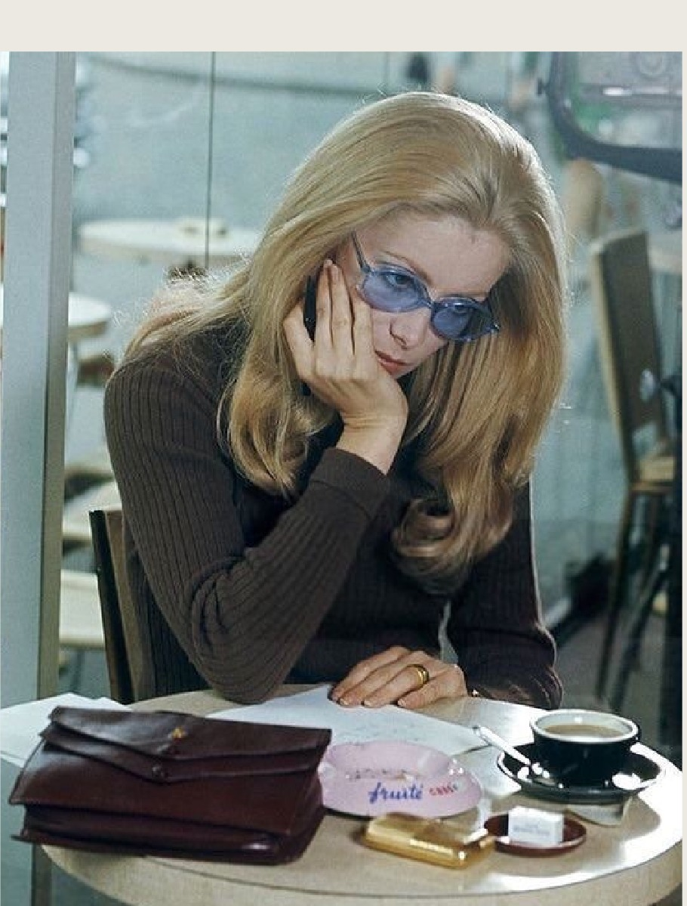
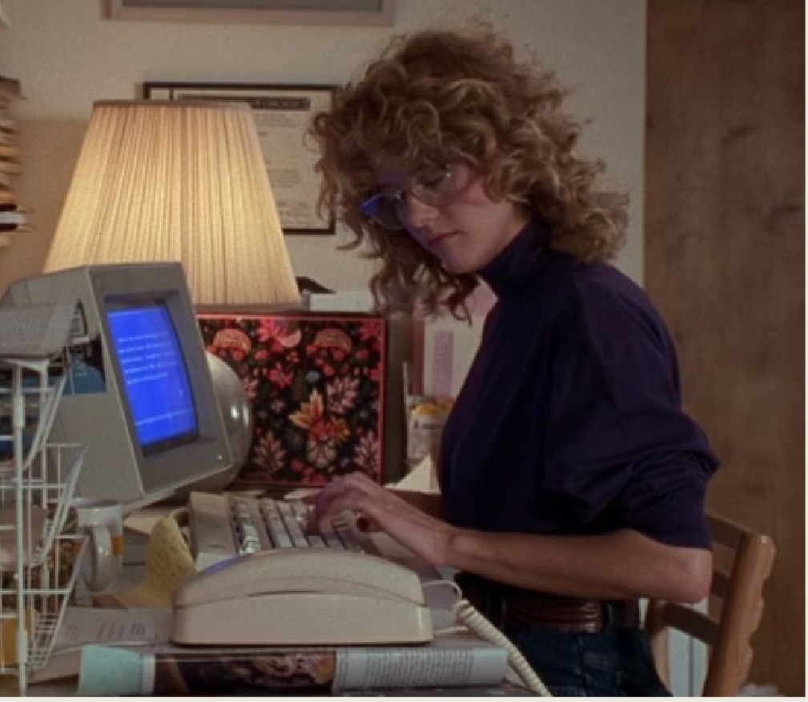
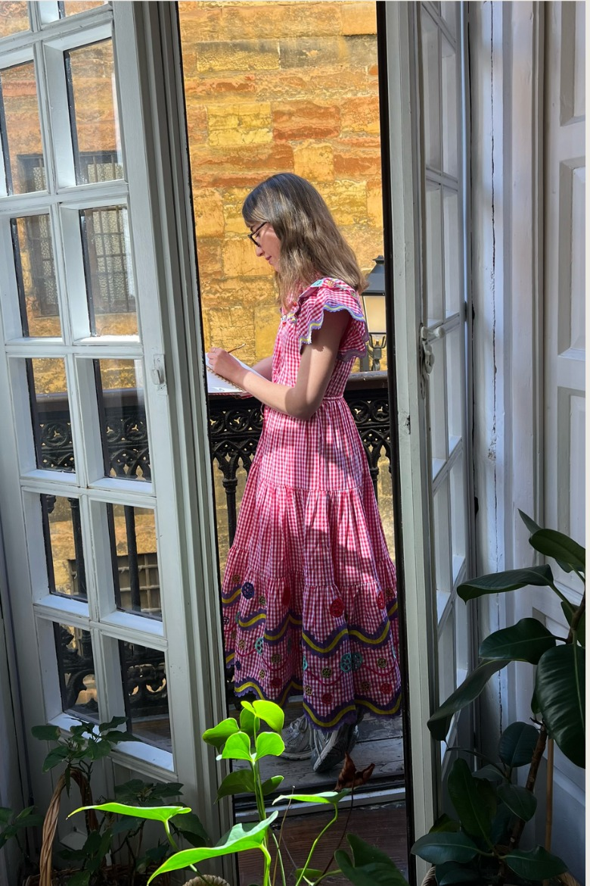

Elaboré un manual para (sobre)vivir sola con reflexiones y consejos para cualquier mujer que quiera independizarse. Puedes leerlo aquí.
MI ESCRITURA
DÓNDE ESCRIBO
- La Soga Cultural (2025 - actualidad)
- Newsletter Celia B (2024 - 2025)
- Substack ( 2026 - actualidad)
- Instragram (2021 - actualidad)
QUÉ PUEDES ENCONTRAR EN MIS ARTÍCULOS:

- AUTOIRONÍA
- COTIDIANIDAD
- REFERENCIAS
- HUMOR
- REFLEXIÓN
SUPONGO QUE DEBERÍA MOSTRARTE ALGUNOS EJEMPLOS, CLARO.

AHÍ, VAMOS:

Defendí - era necesario- las comedias románticas. ¿Cómo? Así.
Me atreví con la crítica gastronómica. Nacer entre fogones y buenos guisos, puede que tenga algo que ver. Mira.
Mi pasión por la moda, me inspiró hacer un recorrido histórico de la camiseta de rayas. Y le puse un filtro autobiográfico. Está en mi perfil de substack.
Siguiendo con la moda -y el cine-me despedí de Robert Redford con este pequeño homenaje en la newsletter de Celia B y en Instagram. Y, como no podía ser menos, hice lo mismo con Diane Keaton.